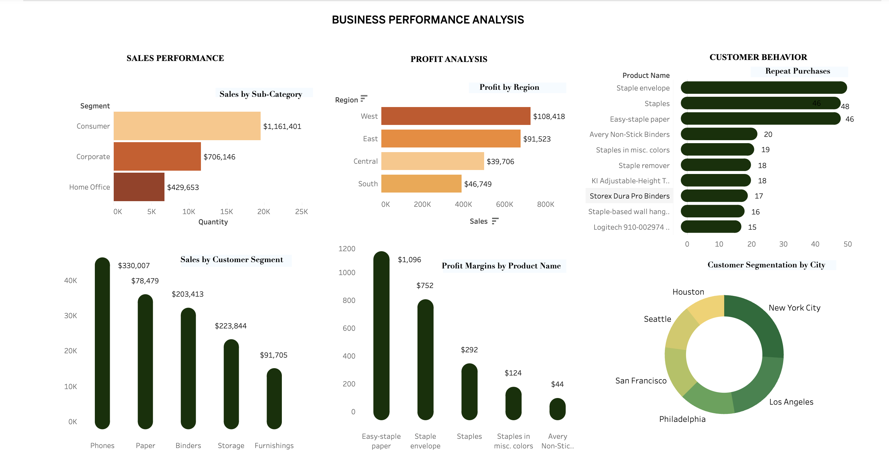
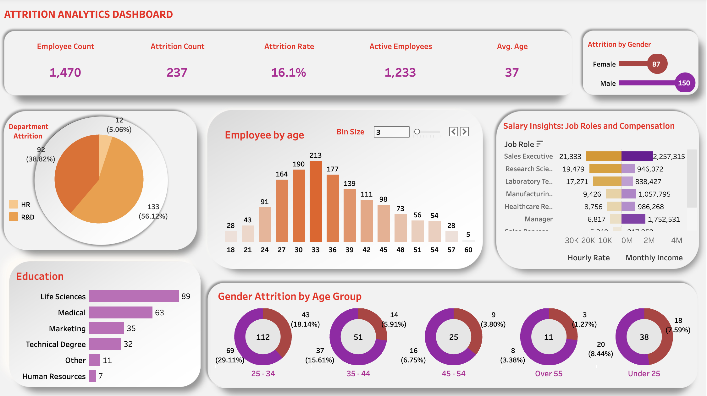
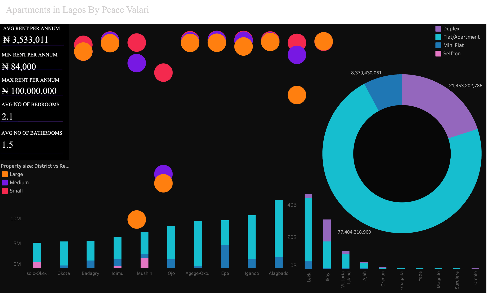

Tableau Dashboards
Overview: A collection of Tableau dashboards built across three distinct domains: real estate, consumer behaviour, and workforce analytics.
Each dashboard was designed to make complex data immediately readable, surfacing the patterns and outliers that drive decisions rather than simply displaying numbers.
Housing and Apartments in Lagos: An exploratory dashboard mapping the Lagos residential property market.
It examines rental and sale pricing across neighbourhoods, property types, and size categories, helping prospective tenants, buyers, and investors understand how location and property features translate into cost in one of Africa's most dynamic housing markets.
Consumer Behaviour Analysis: A multi-view dashboard analysing a retail business across customer segmentation, profitability, and product performance.
It identifies which customer segments generate the most value, which product categories drive or drag on margins, and how purchasing behaviour varies across the customer base; providing a clear foundation for targeting, pricing, and inventory decisions.
Attrition Analysis: A workforce dashboard built to understand employee turnover. It breaks down attrition by department, tenure, role, and demographic profile.
Makes it possible to identify where the organisation is losing people, who is most at risk of leaving, and what patterns might be driving disengagement — the first step toward any meaningful retention strategy.
Analysis


